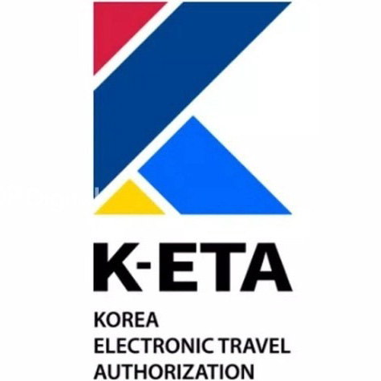

About Seoul
Republic of Korea
Located at the center of Northeast Asia, the Korean Peninsula neighbors China, Russia, and Japan. Under the World Geodetic System, it lies between 33 and 43 degrees north latitude and 124 and 132 degrees east longitude. The Peninsula (including both North and South Koreas) is 1,000 km long and 300 km wide on average, and its total land area is 222,000 km2. The total land area of South Korea (below the Military Demarcation Line) is around 100,364 km2.
Around 3/4 of the area is covered with mountains. You can find mountains almost anywhere in the country, but there are a few places you can view flat horizons. Topologically, Korea is higher in the east and lower in the west. Tall mountains with altitudes exceeding 1,000 m are concentrated in the north and the east, forming the topological backbone of the country. The mountainsides are steeper toward the east coast, and less severe toward the west coast.
Korea is surrounded by the sea on three sides, except for the northern side. The total extension of the coastlines is 17,000 km (including islands). The East Sea is characterized by its deep waters and simpler coastlines, whereas the West and South Seas are shallower, with complicated coastlines and more islands. Each of the three seas offers distinctive features and a wide array of oceanic atmospheres: the East Sea with its clean and deep water; the West Sea with its mud flats thriving with life; and the South Sea with its numerous islands (which earned the sea its nickname: Dadohae, or the sea of many islands).
Seoul is the capital of Korea and the center of politics, economy, society, and culture. Located in the center of the Korean Peninsula. The city of Seoul has over two thousand years of history and has continued to exist as a place where culture and history have developed dynamically.
In Seoul, you can easily find traces of ancient heritage, such as Gyeongbokgung Palace, throughout the city, while being able to see and enjoy the modern aspects of urban Korea. I hope you enjoy the unique and beautiful scenery that matches the past and the present.
Seoul is easily accessible from Incheon International Airport, which is one of the world's most preferred airports, and it has one of the largest transportation infrastructures which makes it easier for visitors to move to different cities.
In addition, Seoul is the heart of the “Korean Cultural Wave”, which leads the world’s cultural trend by having a variety of entertainment and other cultural elements everywhere in the city.
More Information
Entry Visa
-
VisaVisitors who intend to enter the Republic of Korea must have a valid passport and a valid visa as a basic requirement for an entry permit in principle. However, visitors of certain countries that signed a visa exemption agreement with the Republic of Korea may enter without a visa.Please visit the link for the latest Visa entry information.
-
K-ETA (Korea Electronic Travel Authorization)K-ETA eligible nationals, who wish to enter visa-free the Republic of Korea, must obtain K-ETA approval before boarding the flight or ship.
You can apply for K-ETA via the official website or mobile App(K-ETA). Please keep in mind that the assessment can take more than 72 hours depending on the situation. K-ETA fee is 10,000KRW (approximately USD $9~10, additional fee excluded) and is non-refundable even if the application is denied. Those who have the K-ETA are not required to submit an arrival card at the port of arrival.Please visit the link for more information.
Transportation
From Incheon Airport
Subway
| Route | Traveling Time |
|---|---|
| Incheon International Airport T1 (Airport railroad) - Gimpo Airport (Line 5 or Line 9) - Yeouido Station - Conrad Hotel Seoul | 5 mins by walk |
- Take the Airport Railroad(A’Rex) at Incheon Int’l Airport, get off at [Gimpo Int’l Airport station] and transfer to Subway Line 5 (purple line) or Line 9 (gold line).
-
Get off at [Yeouido] station and go out through Exit 3.
* You can take the express subway as well from [Gimpo Int’l Airport] to [Yeouido].
Limousin Bus (6007)
| Route | Incheon International Airport Station - Yeongdeungpo (Conrad Hotel Seoul) |
|---|---|
| Stop Location | 1 Floor No. 6 (T1) / Transportation Center Basement B1 No. 27 (T2) |
| Route Schedule |
First Bus: T1 07:00 /T2 06:40 Last Bus: T1 23:00 / T2 22:40 Intervals: 30-60 Mins (approx.) |
| Fare | ₩17,000 |
| Traveling Time | 70 minutes |
Taxi
| Type | Base Fare (KRW) | Stop location | Note | |
|---|---|---|---|---|
| Terminal 1 | Terminal 2 | |||
| Regular Taxi | Seoul: 4,800 | 5C, 6C, 6D | 5C |
23:00 ~ 02:00 additional late-night charge 40% 22:00 ~ 23:00 additional late-night charge 20% 02:00 ~ 04:00 additional late-night charge 20% |
| Gyeonggi: 3,800 | 4D | 24:00 - 04:00 additional late-night charge 20% | ||
| Incheon: 3,800 | 3C, 3D | 24:00 - 04:00 additional late-night charge 20% | ||
| First-Class/Oversized Taxi (Up to 9 passengers) |
6,500 (Seoul: 7,000) |
7C/8C | 5D | |
| International Taxi SEOUL SMART |
Standard Seoul's distance fare applies | 4C | 1C | Taxis officially designated to provide foreign language service |
Other Useful Information
- Time Difference
- Time in Korea is 9 hours earlier than Greenwich Mean Time and there are no daylight savings. If you want to know the time in Korea now, please [click here]
- Weather
-
The average temperature of December in Korea is around 0°C to 5°C.
Especially in the early morning and evening, temperatures can drop below zero.
it's advisable to dress warmly. This includes wearing a heavy jacket, hat, gloves, and a scarf.
Layering is essential, as the temperature can fluctuate throughout the day.
For more detailed information about weather, Please
[click here] - Business Hours
-
- Government office: 09:00 - 18:00 on weekdays, Closed on weekends
- Banks: 09:30 - 16:00 on weekdays, Closed on weekends
- Department Stores: 10:30 - 20:00, Everyday
- Convenience Stores: 24hours open, Everyday
- Credit Card
- Visa, and Master Card are accepted at almost all retail outlets, but Diners Club and American Express may only be accepted at major hotels, shops and restaurants. Check with your credit card company for details on merchant acceptance and other available services.
- Currency & Exchange
-
The South Korean Won is the official currency of South Korea.

- Currency Exchange : Major foreign currencies that can be exchanged at banks, hotels, and the airport.
- Bank hours : 09:00~16:00, Monday to Friday
- Electricity
- Korea uses 220v as the standard voltage and the standard frequency is 60 Hz. The plug uses two round pins and the same shape used in many European, South American and Asian countries. If you don’t have one, you can buy one at a duty-free shop or convenience store at Incheon International Airport.
- VAT & Tipping
-
- Tip: Tipping is not regularly practiced in Korea. A 10% service charge will be included often to your bill at upscale restaurants and hotels. It is also not necessary to tip a taxi driver unless he assists you with luggage or provides an extra service.
- Tax: Foreign visitors can receive the tax refunds when they buy goods including tax. Tax refunds can be received immediately when visitors buy items at certified Tax Free Stores up to 30,000 KRW. Visitors can receive also by submitting the applicable receipts at the custom clearance desk when leaving the country.
- Visa
- Visitors who intend to enter the Republic of Korea must have a valid passport and a valid visa as a basic requirement for an entry permit in principle. However, visitors of certain countries that signed a visa exemption agreement with the Republic of Korea may enter without a visa. For the latest Visa entry information, Please [click here].
- Emergency & Useful Numbers
-
Emergency calls
- - Police : 112
- - Lost and Found : 182
- - Fire department : 119
- - Medical Emergency : 1339
- - First Aid Service : 129
-
Useful Numbers
- - Tourist Information: 1330
- - Seoul Call Center: 02-120
- - Local Telephone Directory: 02-114
- Useful Websites